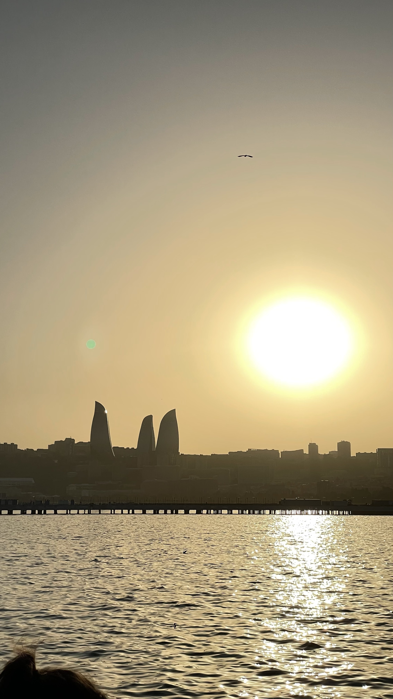
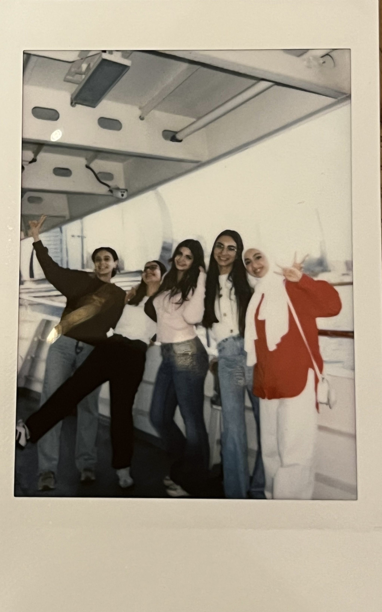
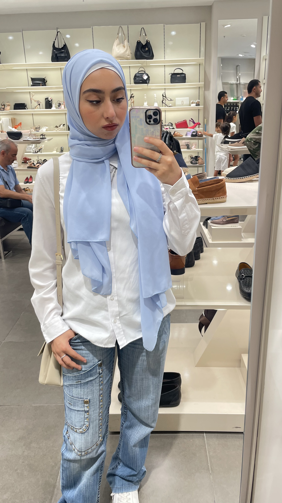

 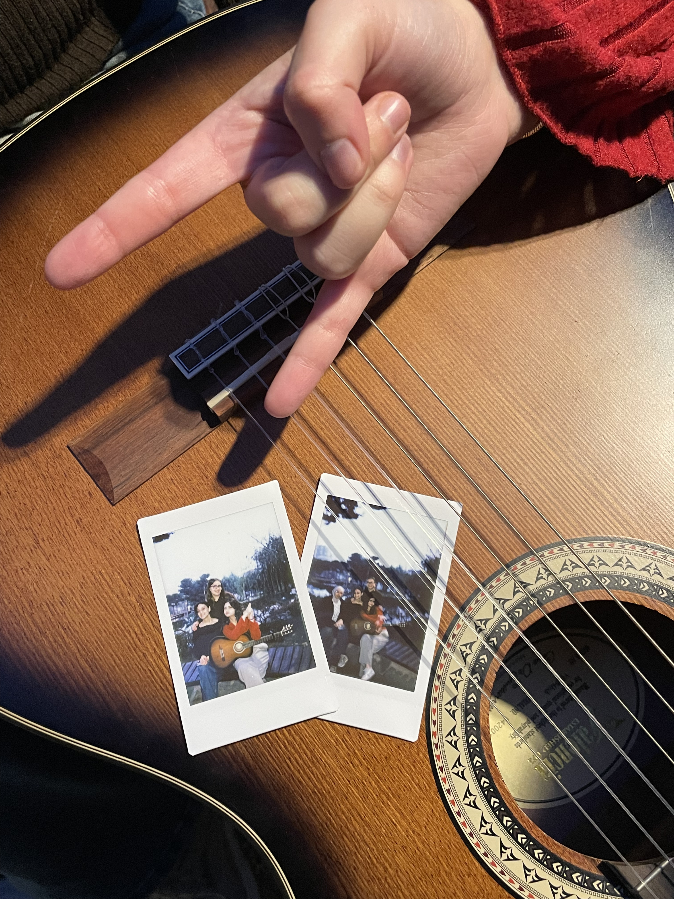
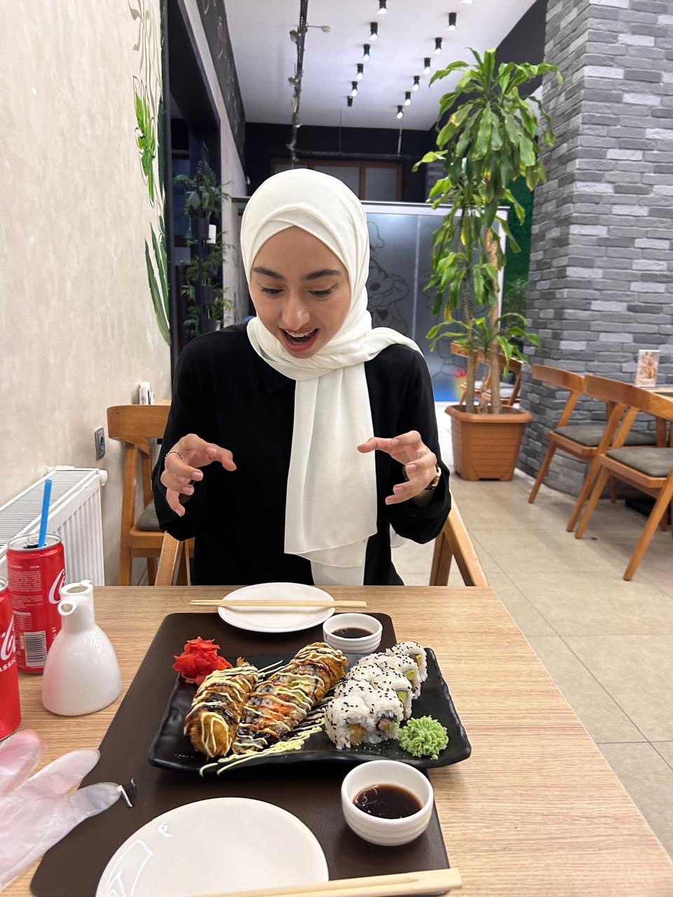
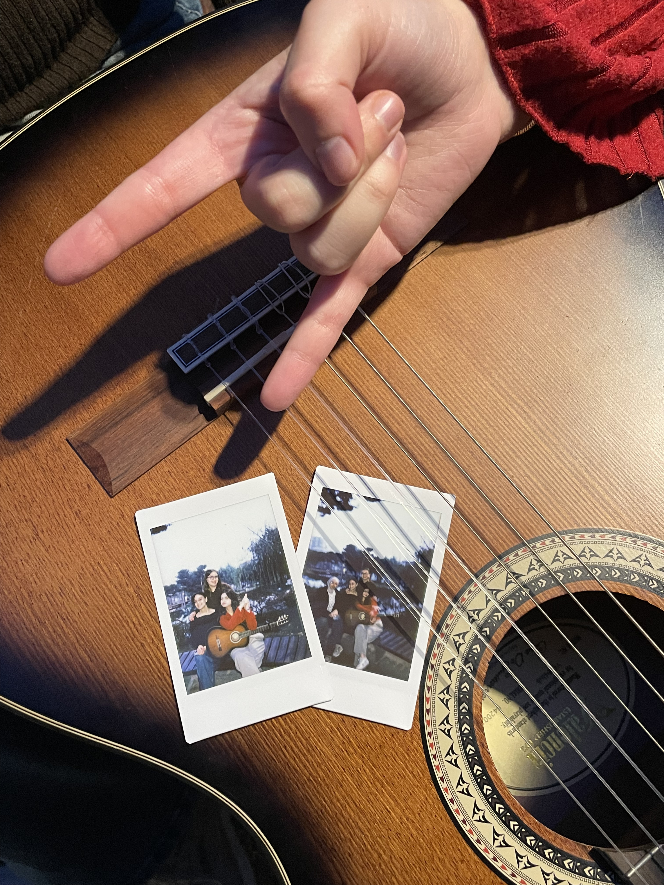
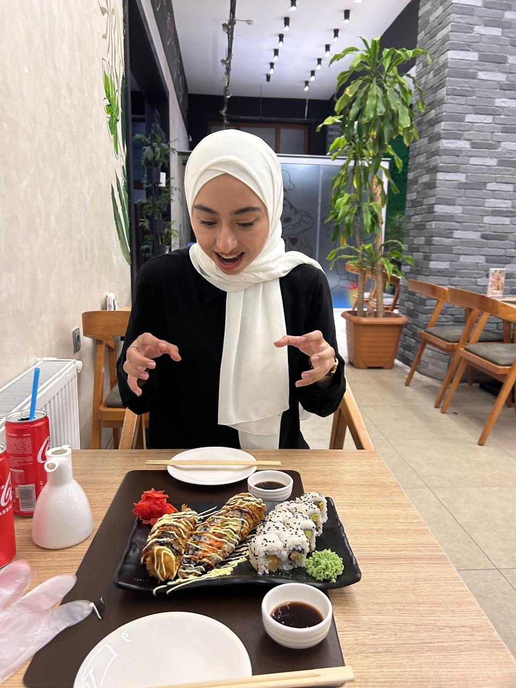
 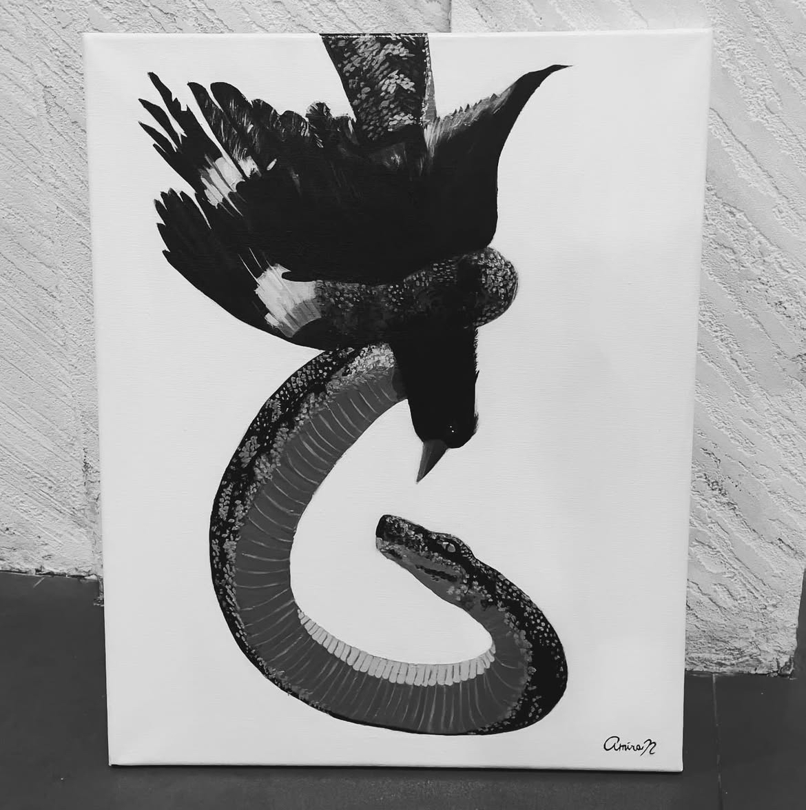
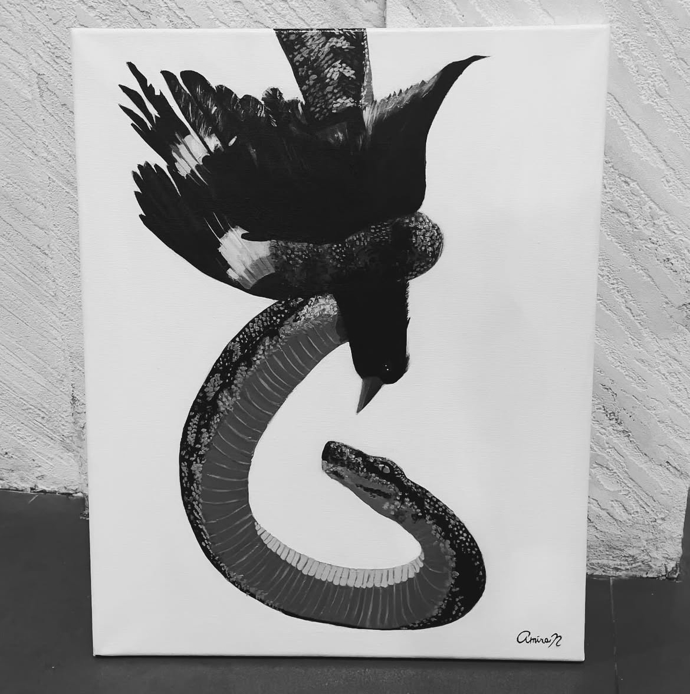

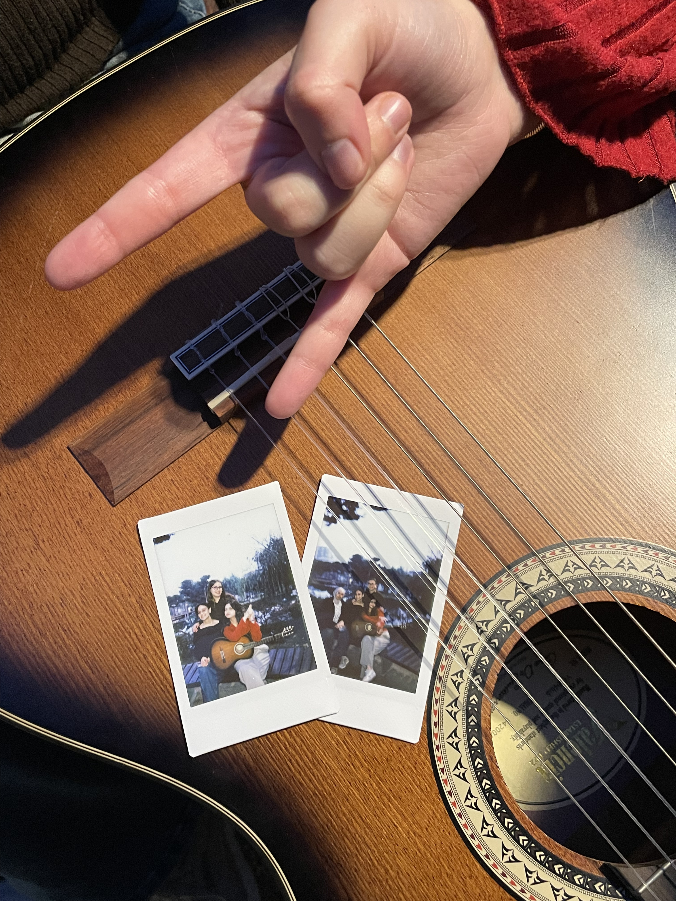
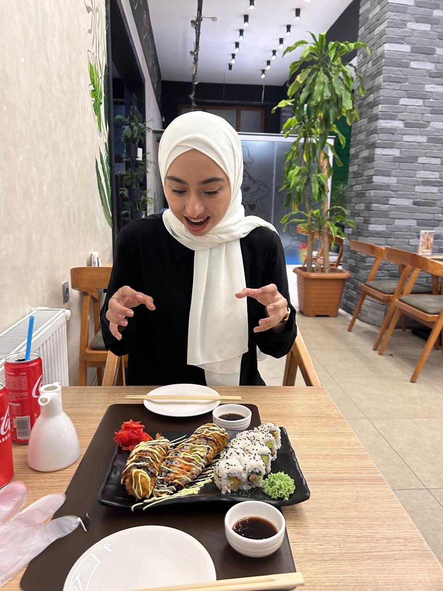
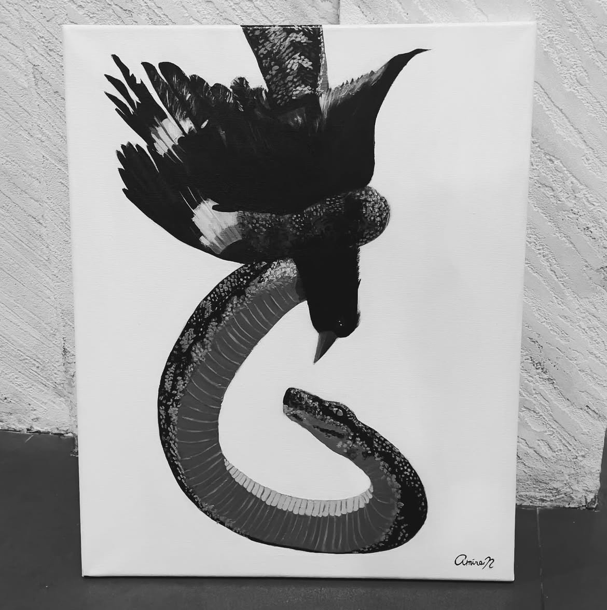
If you like what you see, check out my art page on Instagram!
------------------------------------------------------------------------------------------------------------------------------------
P.S. although i'm not very active on that platform, i try to post when i get a chance.
(cries in women in stem.)